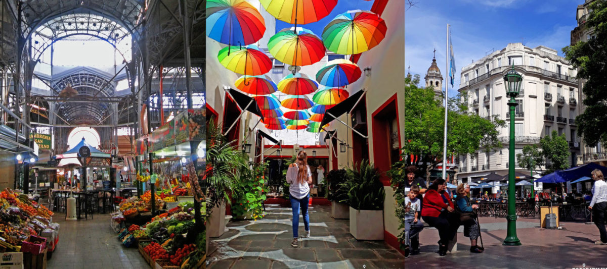
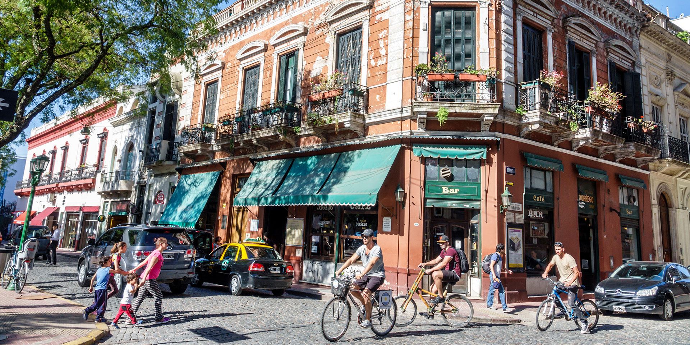

Conociendo San Telmo
Historia de San Telmo
Bienvenidos a este pequeño recorrido por este coqueto barrio

Un hermoso recorrido histórico en familia
Video:
San Telmo y sus misterios: la historia de un barrio a través de sus casonas y calles
Ir a youtube
